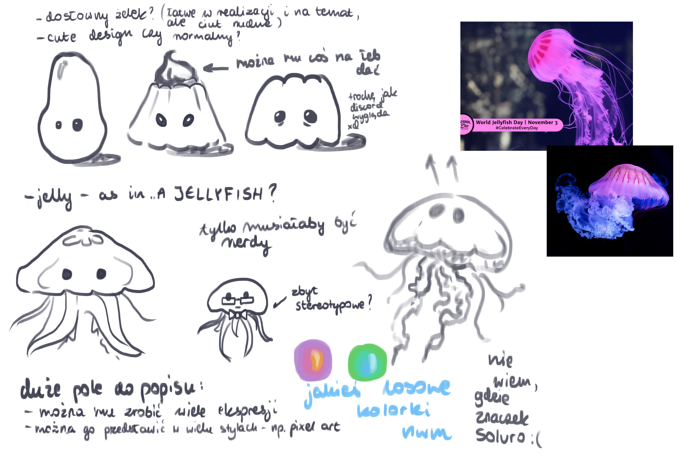
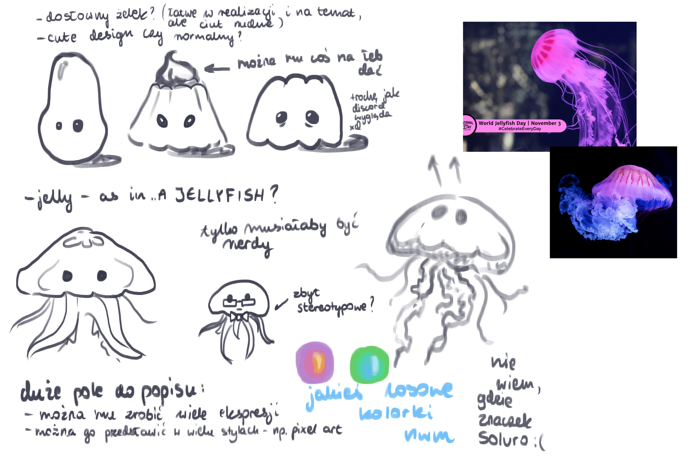
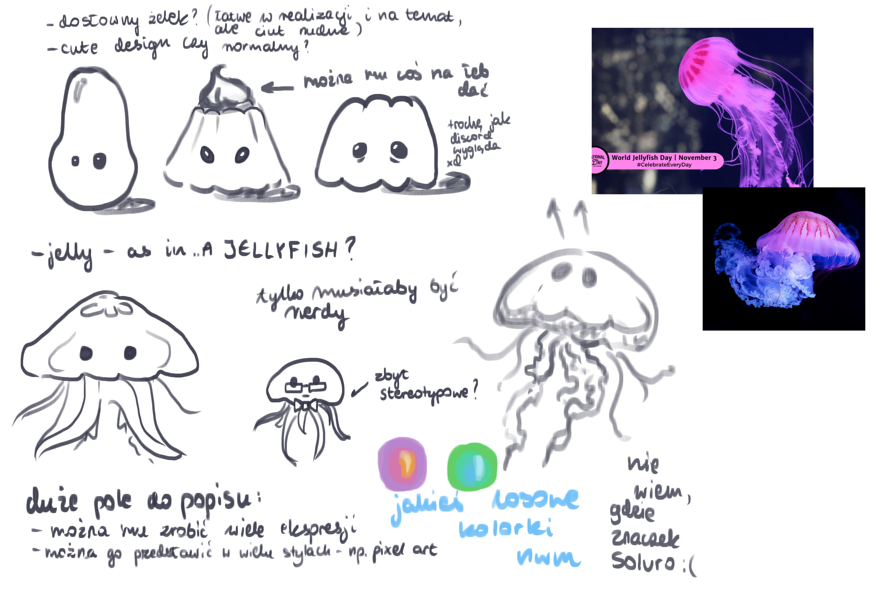

Pierwsze szkice Eleka Żelka
Tak wyglądały pierwsze szkice Eleka Żelka. Zobacz jak zmieniał się na przestrzeni lat (tak naprawdę to kilku tygodni)! Elek Żelek mógł być Żelkiem lub meduzą, ale ostatecznie zdecydowaliśmy się na meduzę.
 

Tak wyglądały pierwsze szkice Eleka Żelka. Zobacz jak zmieniał się na przestrzeni lat (tak naprawdę to kilku tygodni)! Elek Żelek mógł być Żelkiem lub meduzą, ale ostatecznie zdecydowaliśmy się na meduzę.
